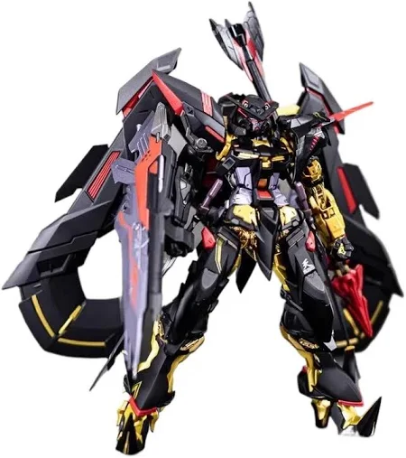

Real Grade (RG)
Real Grade interests me because it puts a lot of detail into a smaller model. It is the grade I would explore when I want an intricate build without needing a large display space.
What is Real Grade?
Real Grade Gundam kits are generally 1/144 scale. They emphasize detailed parts, internal frames, and complex assemblies in a compact size. Even though they are similar in scale to many HG kits, they can involve more pieces and more time to assemble.
The RG 1/144 Gundam Astray Gold Frame Amatsu Mina is an example that there is soo much to notice when looking closely. For me, a model does not have to be large to look impressive. I would choose a design I enjoy and take my time building it.
Where to buy? -> USAGS.

How to approach the build
Your focus with an RG kit should be careful assembly and organization. Instead of rushing through the small pieces, give yourself time to check how each part connects.
- Keep small pieces in a tray so they do not get lost.
- Read each step carefully and check the direction of each part.
- Take a break when you lose focus instead of forcing yourself to finish.
These are personal suggestions rather than official requirements for this grade.
Back to the grade comparison · Share your building interests